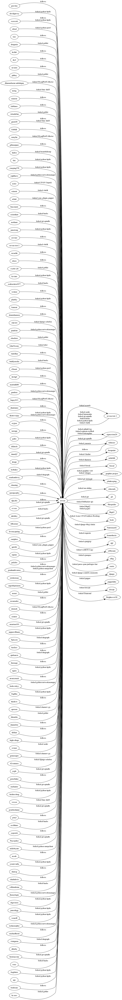

Git spindle for GitHub¶
git hub lets you use your GitHub account from the command line. Among other things, it lets you create and fork repositories, or file pull requests.
Basic usage¶
The first time you use git hub, it will ask you for your GitHub username and password. It then requests (and stores) an API authentication token, so you can always revoke access from your profile page.
The authentication token is stored in ~/.gitspindle. Never share this
token with anyone as it gives full access to your GitHub account.
-
git hub whoami
A simple command to try out is git hub whoami, which tells you what GitHub thinks about who you are. For example:
dennis@lightning:~$ git hub whoami
GitHub user: seveas
GitHub password:
Dennis Kaarsemaker
Profile https://github.com/seveas
Email dennis@kaarsemaker.net
Blog http://www.kaarsemaker.net
Location Amsterdam
Company Booking.com
Repos 36 public, 0 private
Gists 4 public, 0 private
RSA key ...N0nFw3oW5l (Dennis)
-
git hub whois <user>...
If you want to see this information about other users, use git hub whois:
dennis@lightning:~$ git hub whois sigmavirus24
Ian Cordasco
Profile https://github.com/sigmavirus24
Email graffatcolmingov@gmail.com
Blog http://www.coglib.com/~icordasc/blog
Repos 21 public, 0 private
Gists 9 public, 0 private
-
git hub status
Shows the last few GitHub status messages:
dennis@lightning:~$ git hub status
2014-04-01 23:06 minor Pages builds are paused while we investigate an increase in failed builds
2014-04-01 23:22 good Everything operating normally.
2014-04-02 00:05 minor We're investigating reports of git operation failures.
2014-04-02 00:29 major We're experiencing problems with repo operations and are working to restore functionality.
2014-04-02 01:00 major Git and HTTPS repo operations are intermittently unavailable while we repair the source of the problem.
2014-04-02 01:22 major SSH git operations have been restored and we're working to fix HTTPS functionality.
2014-04-02 01:40 minor We have implemented a fix for the issue and git operations are recovering.
2014-04-02 01:47 good Everything operating normally.
2014-04-03 09:55 minor We're currently investigating issues with operations against a small percentage of repositories.
2014-04-03 10:14 good Everything operating normally.
-
git hub repos [--no-forks] [<user>]
List all repositories owned by a user, by default you. Specify --no-forks
to exclude forked repositories.
-
git hub add-public-keys [<key>...]
Add SSH public keys (default: ~/.ssh/*.pub) to your account.
-
git hub public-keys [<user>]
Display all public keys of a user, in a format that can be added to
~/.authorized_keys.
-
git hub log [--type=<type>] [--count=<count>] [--verbose] [<what>]
Displays a log of your GitHub actions, such as pushes and issue comments. You can also specify a user or repository and the relevant log will be shown instead of yours.
If you are only interested in events of a specific type, you can filter for it,
e.g. --type=push. You can also get more (or less) than the default 30
items in the log by specifying a count. Finally, --verbose will give
slightly more verbose output for some log items.
-
git hub create-token [--store]
Create a personal access token that can be used for git operations (clone, fetch, push) over http. Especially useful if you use two-factor authentication, as these tokens can be used instead of your password and don’t require the second factor.
The token is shown in the output of the command. If you specify
--store, the token will also be stored using the git credential
helpers.
Using multiple accounts¶
git hub supports using more than one account, and using local
installs of GitHub enterprise. To use a non-default account outside a
repository, for example when cloning, you have to tell git hub which
account to use using --account:
$ git hub --account test-account clone seveas/whelk
If the account is on a GitHub enterprise installation, you don’t need to use –account all the time. git-spindle will recognize the account from the url in your repository configuration:
$ git hub --account work clone dev/website
$ cd website
$ git hub issues
-
git hub add-account [--host=<host>] <alias>
To add a new account, use the add-account command. If the account lives on a GitHub Enterprise instance, you can specify its hostname.
-
git hub config [--unset] <key> [<value>]
Set, get or unset a configuration variable in ~/.gitspindle. Similar to
git config, but only single-level keys are allowed, and the section
is hardcoded to be the current account.
To change the hostname of any account, including the default one, you can use the config command as follows: git hub config host https://github.example.com.
Interacting with repositories¶
-
git hub create [--private] [--org=<org>] [--description=<description>]
Create a (possibly private) repository on GitHub for your current repository. An optional description can be given too. After running this command, a repository will be created on GitHub and your local repository will have GitHub as remote “origin”, so git push origin master will work.
By default the repository is created under your account, but you can specify an organization to create the repository for.
-
git hub set-origin [--ssh|--http|--git] [--triangular [--upstream-branch=<branch>]]
Fix the configuration of your repository’s remotes. The remote “origin” will be set to your GitHub repository. If “origin” is a fork, an “upstream” remote will be set to the repository you forked from. If “origin” is not a fork, a fetch refspec is added to fetch the pull requests for “origin” as refs/pull/<id>/head.
All non-tracking branches with a matching counterpart in “origin” will be set to
track “origin” (push and pull to it). Use --triangular to set remotes
in a triangular fashion where git pull pulls from “upstream” and
git push pushes to “origin”. This also sets the configuration option
remote.pushDefault, so that new branches are pushed to “origin” even
if they track a branch in “upstream”. All non-tracking branches are set up to
track a matching counterpart in “upstream” except if --upstream-branch
explicitly specifies a branch like “master” in “upstream” that all branches should
track.
For “origin”, an SSH url is used. For “upstream”, set-origin defaults to adding a git url, but this can be overridden. For private repos, SSH is used.
-
git hub clone [--ssh|--http|--git] [--triangular [--upstream-branch=<branch>]] [--parent] [git-clone-options] <repo> [<dir>]
Clone a GitHub repository by name (e.g. seveas/hacks) or URL. The “origin”
remote will be set and, like with set-origin, if “origin” is a fork an
“upstream” remote will be set too. The option --triangular can be used
for a triangular setup.
Defaults to cloning from a git url, but this can be overridden. For private repos, SSH is used.
This command accepts all options git clone accepts and will forward those to git clone.
-
git hub cat <file>...
Display the contents of a file on GitHub. File can start with repository names and refs. For example: master:bin/git-hub, git-spindle:master:bin/git-hub or seveas/git-spindle:master:bin/git-hub.
-
git hub ls [<dir>...]
Display the contents of a directory on GitHub. Directory can start with repository names and refs. For example: master:bin/git-hub, git-spindle:master:bin/git-hub or seveas/git-spindle:master:bin/git-hub.
-
git hub readme [<repo>]
Download and display a repository’s README file, whatever its actual name is.
-
git hub fork [--ssh|--http|--git] [--triangular [--upstream-branch=<branch>]] [<repo>]
Fork another person’s git repository on GitHub and clone that repository
locally. The repository can be specified as a (git) url or simply username/repo.
Like with set-origin, the “origin” and “upstream” remotes will be set up too.
The option --triangular can be used for a triangular setup.
Defaults to cloning from a git url, but this can be overridden. For private repos, SSH is used.
Calling fork in a previously cloned-but-not-forked repository will create a fork of that repository and set up your remotes.
-
git hub forks [<repo>]
List all forks of this repository, highlighting the original repository.
-
git hub add-remote [--ssh|--http|--git] <user> [<name>]
Add a users fork as a remote using the specified name or the user’s login as name for the remote. Defaults to adding an http url, but this can be overridden. For private repos SSH is used.
-
git hub fetch [--ssh|--http|--git] <user> [<refspec>]
If you don’t want to add a user’s fork as a remote, but to want to fetch some refs from it, you can use the fetch command. You can tell it which refs to fetch, and if you don’t give a refspec, it will fetch all branches.
-
git hub browse [--parent] [<repo>] [<section>]
Browse a repository (or its parent) on GitHub. By default the repository’s homepage is opened, but you can specify a different section, such as issues, pulls, wiki, branches, releases, contributors, graphs or settings.
-
git hub mirror [--ssh|--http|--git] [<repo>]
Mirror a repository from GitHub. This is similar to clone, but clones into a
bare repository and maps all remote refs to local refs. When run without
argument, the current repository will be updated. You can also specify
user/* as repository to mirror all repositories of a user.
Administering repositories¶
-
git hub release [--draft] [--prerelease] <tag> [<releasename>]
Create a release on GitHub based on an existing tag.
-
git hub releases [<repo>]
List all releases for this repository.
-
git hub collaborators [<repo>]
List all people with push access to this repository.
-
git hub add-collaborator <user>...
Grant people push access to this repository.
-
git hub remove-collaborator <user>...
Revoke access to this repository.
-
git hub protected
List all protected branches. Protected branches cannot be force-pushed or deleted, and can potentially have required status checks.
-
git hub protect [--enforcement=<level>] [--status_checks=<contexts>] <branch>
Protect a branch against force-pushes and deletion. Optionally require status checks to succeed by specifying their context (e.g. continuous-integration/travis-ci) and for whom this is required (everyone or non_admins).
-
git hub unprotect <branch>
Remove a branch’s protection.
-
git hub deploy-keys [<repo>]
List all deploy keys for this repository
-
git hub add-deploy-key [--read-only] <key>...
Add a deploy key to a repository, which can be used to fetch and push data via ssh. Read-only keys can only fetch.
-
git hub remove-deploy-key <key>...
Remove a deploy key by id. Use the git hub deploy-keys command to see the id’s of your deploy keys.
-
git hub hooks
Show all service hooks for this repository.
-
git hub add-hook <name> [<setting>...]
Add a hook to this repository with the appropriate settings. Settings can be
found in the hooks page on GitHub. One setting all hooks accept is
events, a comma-separated list of events this hook will be triggered
for. A list of all events can be found on the GitHub API page
-
git hub edit-hook <name> [<setting>...]
Edit one or more settings for a hook.
-
git hub remove-hook <name>
Remove a service hook.
Issues and pull requests¶
-
git hub issues [<repo>] [--parent] [<filter>...]
List all open issues for the current repository, or the one specified in the
<repo> argument. If you run this outside a repository, or with – as
<repo>, it will list issues in all your repositories. When you
specify --parent, this will operate on the parent repositoryD.
You can specify filters in the form filter=value to filter issues. Supported filters are:
state, accepted values: all, open, closed
assignee, accepted values: none, *, or a loginname
mentioned, accepted values: a loginname
labels, accepted values: comma-separated list of labels, e.g. bug,ui,@high
since, accepted values: an ISO8601 formatted date string, e.g., 2017-05-20T23:10:27Z
sort, accepted values: created, updated, comments
direction, accepted values: asc, desc
-
git hub issue [<repo>] [--parent] [<issue>...]
Shows details about the mentioned issue numbers. As with issues, you
can use the --parent option to use the parent repository. If you do
not specify an issue number, you will be prompted for a message that will be
used to create a new issue.
-
git hub pull-request [--issue=<issue>] [--yes] [<yours:theirs>]
Files a pull request to merge branch “yours” (default: the current branch) into the upstream branch “theirs” (default: the tracked branch of “yours” if it is in the upstream repository, otherwise the default branch of the upstream repository, usually “master”). Like for a commit message, your editor will be opened to write a pull request message. The comments of said message contain the shortlog and diffstat of the commits that you’re asking to be merged. Note that if you use any characterset in your logs and filenames that is not ascii or utf-8, git hub will misbehave.
If you specify an issue number, that issue will be turned into a pull request and you will not be asked to write a pull request message.
-
git hub apply-pr <pr-number>
GitHub makes it easy for you to merge pull requests, but if you want to keep your history linear, this one is for you. It applies a pull request using git cherry-pick instead of merging.
Gists¶
-
git hub gist [--description=<description>] <file>...
Creates a gist (with optional description) from the named files. If you specify
- as filename, stdin will be used, making it easy to pipe
command output to GitHub, for example: fortune | git hub gist -
-
git hub gists [<user>]
List your gists, or those created by another user.
Other¶
-
git hub calendar [<user>]
Show a timeline of a your activity, or that of another user. The timeline will look like that on your GitHub profile page:
Sep Oct Nov Dec Jan Feb Mar Apr May Jun Jul Aug Sep
■ ■ ■ ■ ■ ■ ■ ■ ■ ■ ■ ■ ■ ■ ■ ■ ■ ■ ■ ■ ■ ■ ■ ■ ■ ■ ■ ■ ■ ■ ■ ■ ■ ■ ■ ■ ■ ■ ■ ■ ■ ■ ■ ■ ■ ■ ■ ■ ■ ■ ■ ■ ■
M ■ ■ ■ ■ ■ ■ ■ ■ ■ ■ ■ ■ ■ ■ ■ ■ ■ ■ ■ ■ ■ ■ ■ ■ ■ ■ ■ ■ ■ ■ ■ ■ ■ ■ ■ ■ ■ ■ ■ ■ ■ ■ ■ ■ ■ ■ ■ ■ ■ ■ ■ ■ ■
■ ■ ■ ■ ■ ■ ■ ■ ■ ■ ■ ■ ■ ■ ■ ■ ■ ■ ■ ■ ■ ■ ■ ■ ■ ■ ■ ■ ■ ■ ■ ■ ■ ■ ■ ■ ■ ■ ■ ■ ■ ■ ■ ■ ■ ■ ■ ■ ■ ■ ■ ■ ■
W ■ ■ ■ ■ ■ ■ ■ ■ ■ ■ ■ ■ ■ ■ ■ ■ ■ ■ ■ ■ ■ ■ ■ ■ ■ ■ ■ ■ ■ ■ ■ ■ ■ ■ ■ ■ ■ ■ ■ ■ ■ ■ ■ ■ ■ ■ ■ ■ ■ ■ ■ ■ ■
■ ■ ■ ■ ■ ■ ■ ■ ■ ■ ■ ■ ■ ■ ■ ■ ■ ■ ■ ■ ■ ■ ■ ■ ■ ■ ■ ■ ■ ■ ■ ■ ■ ■ ■ ■ ■ ■ ■ ■ ■ ■ ■ ■ ■ ■ ■ ■ ■ ■ ■ ■ ■
F ■ ■ ■ ■ ■ ■ ■ ■ ■ ■ ■ ■ ■ ■ ■ ■ ■ ■ ■ ■ ■ ■ ■ ■ ■ ■ ■ ■ ■ ■ ■ ■ ■ ■ ■ ■ ■ ■ ■ ■ ■ ■ ■ ■ ■ ■ ■ ■ ■ ■ ■ ■ ■
■ ■ ■ ■ ■ ■ ■ ■ ■ ■ ■ ■ ■ ■ ■ ■ ■ ■ ■ ■ ■ ■ ■ ■ ■ ■ ■ ■ ■ ■ ■ ■ ■ ■ ■ ■ ■ ■ ■ ■ ■ ■ ■ ■ ■ ■ ■ ■ ■ ■ ■ ■
-
git hub check-pages [<repo>] [--parent]
Check your repository for common misconfigurations in the usage of GitHub
pages, including DNS checks and content checks. You can use the
--parent option to check the parent repository instead.
-
git hub render [--save=<outfile>] <file>
Lets GitHub render a markdown page and displays the result in your browser or save it to a file.
-
git hub ignore [<language>...]
GitHub provides .gitignore templates for various languages and
environments. This command will let you quickly grab them and add them to your
.gitignore. For example: git hub ignore Python C
-
git hub ip-addresses [--git] [--hooks] [--importer] [--pages]
This tells you which ip addresses belong to certain github.com services. Very useful to keep firewalls and access control lists up-to-date.
-
git hub network [<level>]
Generates a graphviz graph of people following you, people you follow or people who’s repositories you’ve forked. For example:
git hub network | dot -T png -Grankdir=LR > network.png
Here’s mine:
-
git hub say [<msg>]
This lets the octocat speak to you.